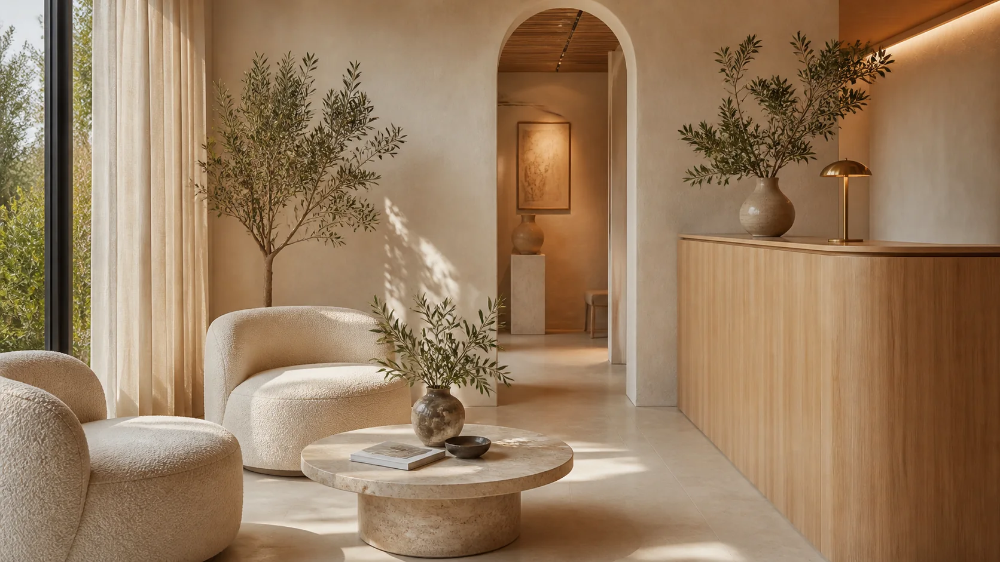

ÖNCE SİZİ DİNLİYORUZ
Güvenle başlar.
Gülüşüne yansır.
İyi bir deneyim, samimi bir sohbetle başlar.
Sizi tanıyalım, gülüşünüzü birlikte konuşalım.
İçiniz rahat
etsin diye.
Diş hekimine gelmeden önce aklınızda pek çok soru olabilir.
Acele etmeden önce onları konuşalım. Sizi neyin rahatsız ettiğini dinleyelim, muayenede gördüklerimizi anlaşılır biçimde anlatalım. Sonraki adıma ne zaman geçeceğinize birlikte karar verelim.
İlk ziyaretinizi keşfedin ↗İlk adımda da
yanınızdayız.
Belirsizliğin yerini bir sohbet alsın.
Süreci adım adım, birlikte konuşalım.
İlk görüşmede önce neden geldiğinizi konuşuruz. Aklınızdaki soruları duymadan muayeneye geçmeyiz.
Muayene sırasında gördüklerimizi günlük bir dille anlatırız. Bir işlem gerekiyorsa nedenini, nasıl ilerleyeceğini ve hangi seçeneklerin bulunduğunu konuşuruz.
O gün yalnızca bilgi almak istemeniz de yeterli. Sonraki adımı görüşmenin sonunda, içinize sindiğinde planlayabilirsiniz.
Görüşme için zaman seçin ↗Bir isimden önce,
bir güven bağı.
Sorularınızı dinleyen, süreci sizinle konuşan bir ekiple tanışın.
Tanışmak için ilk adım ↗EKİBİMİZLE TANIŞIN
Hikâyenin arkasındaki insanlar.
Gerçek hekim fotoğrafları, isimleri ve doğrulanmış mesleki bilgileri burada yer alacak.
İÇERİK HAZIRLIK AŞAMASINDA
Biraz sakinlik.
Biraz size zaman.
Acele etmeden, sorularınıza yer açarak.
Temsili tasarım görseli · Gerçek klinik fotoğraflarıyla değiştirilecek.Aklınızda
kalmasın.
İlk adımdan önce, birkaç yanıt.
İlk görüşmede neler konuşacağız?
Beklentilerinizi, varsa şikâyetlerinizi ve sorularınızı paylaşabilirsiniz. Muayene ve sonraki adımlar hekiminizin değerlendirmesiyle planlanır.
Hangi tedaviyi seçeceğimi bilmiyorum.
Önceden bir tedavi seçmeniz gerekmiyor. Görüşme konusunu “Genel Muayene” olarak belirleyebilir, ihtiyaçlarınızı hekiminizle değerlendirebilirsiniz.
Diş hekimi ziyaretinden endişe duyuyorum.
Bu endişeyi ilk görüşmede paylaşabilirsiniz. Süreçle ilgili açıklama istemek, sorular sormak ve beklentilerinizi konuşmak için alan açıyoruz.
Formu doldurunca randevum kesinleşir mi?
Bu yerel denemede talepler bilgisayarınızdaki demo veritabanına kaydedilir. Onay bekleyen talepler de seçilen hekim ve zaman aralığını ayırır. İptal edilen taleplerin saatleri yeniden açılır. Klinik onayı olmadan randevu kesinleşmez; gerçek kliniğe bildirim gönderilmez.
Tedavi süresi ve ücretini nasıl öğrenebilirim?
Süreç ve ücret bilgisi, kişisel değerlendirme ve önerilen plana göre klinikle görüşülerek netleştirilmelidir. Bu taslakta fiyat veya sonuç garantisi sunulmaz.
Bir sohbetle
başlayabilir.
Size zaman ayıralım.
Beklentilerinizi birlikte konuşalım.
Yerel randevu denemesi.
Demo hekimlerle yapılan talepler yalnızca bu bilgisayara kaydedilir. Gerçek kişisel bilgi kullanmayın.